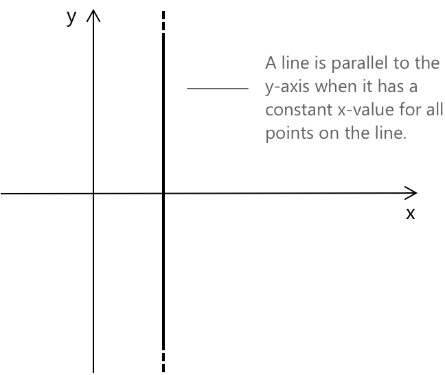
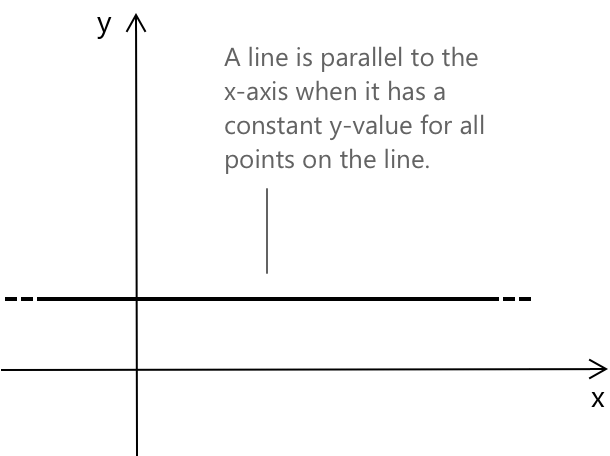
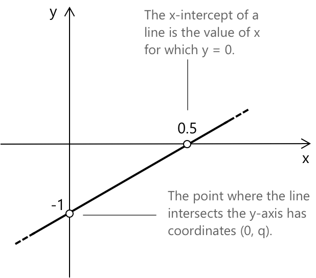
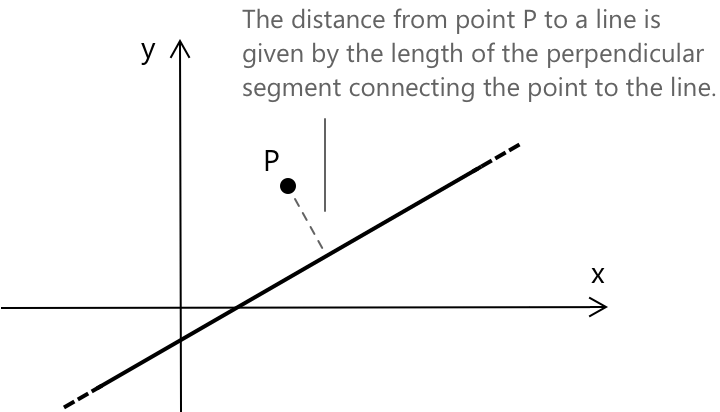
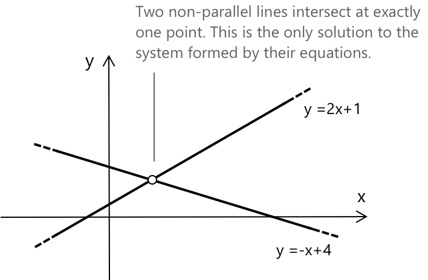

Прямі
Що таке прямі
Пряма — це фундаментальний геометричний об'єкт, що складається з нескінченної кількості точок, вирівняних у досконало прямий шлях. Вона не має товщини, не має кінцевих точок і нескінченно продовжується в обох напрямках. Пряма повністю визначається будь-якими двома її точками та представляє найпростіший, незмінний зв'язок у просторі.
Неявна форма прямої записується як:
\[ax + by + c = 0\]
де \(a\), \(b\) та \(c\) — дійсні числа, і принаймні одне з \(a\) або \(b\) є ненульовим. Це рівняння називається неявним, оскільки обидві змінні знаходяться по одну сторону рівняння, і зв'язок між \(x\) та \(y\) не ізольований.
Паралельні та перпендикулярні прямі
Пряма є паралельною до осі y, коли вона проходить вертикально і всі її точки мають однакову координату x. Цей тип прямої не зміщується вліво чи вправо при русі вгору або вниз. Вона залишається суворо вертикальною. Її рівняння:
\[x = k\]

Пряма є паралельною до осі x, коли вона проходить горизонтально і всі її точки мають однакову координату y. Цей тип прямої не зміщується вгору або вниз при русі вліво чи вправо. Вона залишається суворо горизонтальною. Її рівняння:
\[ y = k \]

Горизонтальні прямі мають кутовий коефіцієнт, що дорівнює нулю, і нескінченно продовжуються в обох напрямках.
Загальне рівняння прямої
У загальному вигляді рівняння прямої можна записати в явній формі як:
\[ y = mx + q \]

\(m\) — це кутовий коефіцієнт прямої, а \(q\) — точка перетину з віссю y. Точка перетину прямої з віссю x — це значення x, при якому y = 0 (іншими словами, це корінь рівняння прямої).
Точка лежить на прямій тоді і тільки тоді, коли її координати задовольняють рівняння прямої. Це означає, що при підстановці значень x та y точки в рівняння обидві частини рівняння залишаються рівними. Наприклад, точка \((2, 5)\) лежить на прямій \( y = 2x + 1 \), оскільки:
\[y = 2(2) + 1 = 5 \]
Отже, рівняння виконується, і точка належить прямій.
Дві прямі \( r \) та \( s \) є паралельними, якщо вони мають однаковий кутовий коефіцієнт \( m_r = m_s \). Вони є перпендикулярними, якщо їхні кутові коефіцієнти є від'ємними оберненими \( m_r = -\dfrac{1}{m_s} \)
Кутовий коефіцієнт ( m ) не визначений для прямих, паралельних осі y, і дорівнює 0 для прямих, паралельних осі x.
Лінійне рівняння з двома змінними, записане як \( y = mx + q \), виражає прямий зв'язок між \( x \) та \( y \). Це рівняння відповідає прямій на координатній площині, де його структура визначає положення та нахил прямої.
Відстань від точки до прямої
Відстань від точки \( P(x_P, y_P) \) до прямої \( r \), заданої рівнянням \(ax + by + c = 0 \), — це довжина відрізка, що з'єднує точку \( P \) з основою перпендикуляра, опущеного з \( P \) на пряму.

Ця відстань обчислюється за формулою:
\[ d = \frac{\left| ax_P + by_P + c \right|}{\sqrt{a^2 + b^2}} \]
Цей вираз дає найкоротшу відстань від точки до прямої, тобто перпендикулярну відстань, а не довжину будь-якого довільного відрізка.
Пряма, що проходить через дві точки
Розглянемо пряму, що проходить через дві точки \( P(x_P, y_P) \) та \( Q(x_Q, y_Q) \). Якщо \( x_P = x_Q \), пряма паралельна осі y і її рівняння має вигляд: \[ x = x_P \]
Якщо \( x_P \ne x_Q \), пряма має кутовий коефіцієнт \( m \), що визначається формулою: \[ m = \frac{y_Q – y_P}{x_Q – x_P} \] Її рівняння має вигляд:
\[ y – y_P = m(x – x_P) \]
Це також можна записати в симетричній формі:
\[ \frac{y - y_P}{y_Q - y_P} = \frac{x – x_P}{x_Q – x_P} \]
Приклад 1
Знайдемо рівняння прямої, що проходить через точки:
\[ P(1, 2) \quad \text{та} \quad Q(3, 6) \]
Для початку обчислимо кутовий коефіцієнт прямої. Кутовий коефіцієнт \( m \) — це відношення різниці значень y до різниці значень x двох точок:
\[ m = \frac{y_Q – y_P}{x_Q – x_P} = \frac{6 - 2}{3 - 1} = \frac{4}{2} = 2 \]
Тепер, коли ми знаємо, що кутовий коефіцієнт дорівнює 2, ми можемо записати рівняння прямої, використовуючи форму рівняння з кутовим коефіцієнтом і точкою. Виберемо точку \( P(1, 2) \) і підставимо значення у формулу:
\[ y – 2 = 2(x – 1) \]
Ми можемо залишити рівняння в такому вигляді або розкрити дужки, щоб отримати рівняння з кутовим коефіцієнтом та вільним членом:
\[ y = 2x – 2 + 2 = 2x \]
Отже, пряма, що проходить через \( P(1, 2) \) та \( Q(3, 6) \), має рівняння:
\(y = 2x\)
Перетин двох прямих
Якщо прямі паралельні, вони ніколи не перетинаються, оскільки мають однаковий кутовий коефіцієнт і ніколи не пересікають одна одну. Дві прямі, що не є паралельними, перетинаються в одній точці. Координати точки перетину є розв'язаннями системи, утвореної рівняннями двох прямих.
Приклад 2
Наприклад, розглянемо наступну пряму в формі з кутовим коефіцієнтом та вільним членом:
\[ y = 2x + 1 \]
Тепер візьмемо іншу пряму з іншим кутовим коефіцієнтом, щоб вони не були паралельними і перетиналися: \[ y = -x + 4 \]
Щоб знайти точку перетину, розв'яжемо систему, утворену двома рівняннями:
\[ \begin{cases} y = 2x + 1 \\[0.5em] y = -x + 4 \end{cases} \]
Прирівнявши праві частини, отримаємо:
\[ \begin{align} &2x + 1 = -x + 4 \\[0.5em] &3x = 3 \\[0.5em] &x = 1 \end{align} \]
Підставивши \( x = 1 \) в одне з вихідних рівнянь, знайдемо:
\[ y = 2(1) + 1 = 3 \]

Отже, дві прямі перетинаються в точці:
\((x=1, y=3)\)